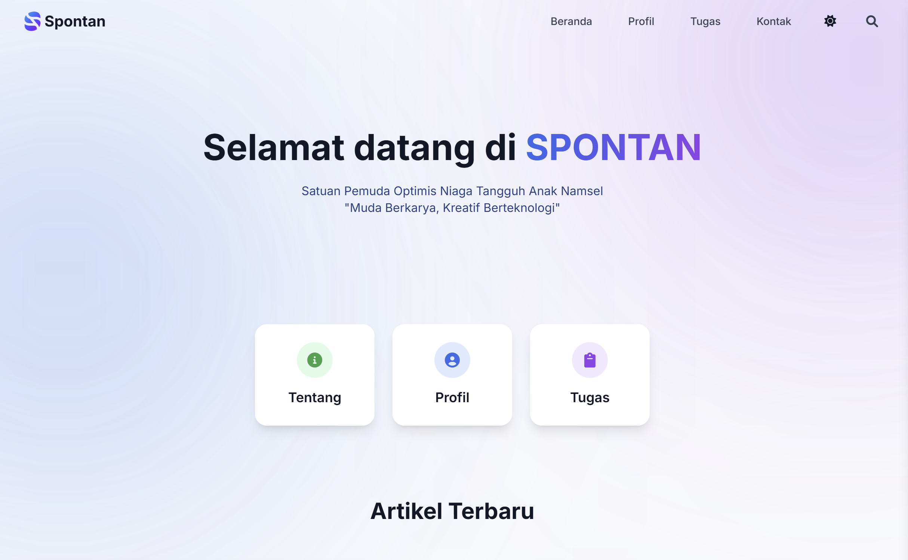

Halo 👋, saya Kemal Syabani Adama
pelajar yang ingin menjadi DevOps | Programmer
Tentang
Pelajar SMK Negeri 69 Jakarta jurusan Sistem Informatika, Jaringan, dan Aplikasi (SIJA) dengan peminatan Cloud Computing dan pengembangan web Front End. Gemar mempelajari hal baru dan mudah beradaptasi. Memiliki keahlian dalam menggunakan layanan Cloud, dasar-dasar pengembangan termasuk pembuatan website statis, dan pengalaman administrasi dalam berorganisasi.
Keahlian
Menggunakan layanan AWS
Pembuatan web statis
Pemasangan perangkat lunak
Konfigurasi jaringan dasar
Manajemen waktu
Kerjasama tim
Komunikasi dasar
Bahasa dan Tools
Pendidikan
| 2014 |
SDN Jatibenting 03
Sekolah dasar pertama kali, mengenal teman baru dan belajar bersosialisasi
|
| 2016 |
SDN Pondok Kelapa 05
Beradaptasi dengan lingkungan baru dan mulai menekuni belajar
|
| 2021 |
SMPN 194 Jakarta
Belajar teknologi melalui mata pelajaran TIK, mulai memperbanyak relasi, dan ambisi untuk jenjang berikutnya
|
| 2024 |
SMKN 69 Jakarta
Belajar banyak hal tentang dunia IT melalui mata pelajaran jurusan, berorganisasi, hingga mengelola pikiran dan waktu
|
Kepemimpinan
PIK-R (Pusat Informasi Konseling Remaja)
Bidang Program - Periode 2025/2026
Bertanggung jawab dalam pelaksanakan program kerja
Bertanggung jawab dalam pelaksanakan program kerja
OSIS (Organisasi Siswa Intra Sekolah)
Sekretaris Umum - Periode 2025/2026
Bertanggung jawab dalam urusan administrasi
Bertanggung jawab dalam urusan administrasi
IT Club
Hubungan Masyarakat - Periode 2026/2027
Bertanggung jawab dalam komunikasi eksternal
Bertanggung jawab dalam komunikasi eksternal


Kontak
Saya dapat dijangkau melalui media berikut